F150 cluster · Design round 1
Two views, one A/B pick per view. Sample values only; no vehicle data. Canvas 1920 × 932 (declared design coordinates).
Each mock also has a physical preview at 1920 × 720 with the model index 0 transform (uniform 0.7752 scale, 216 px side bars). The F150 model index is unverified.
Open a mock with ?view=physical or ?cruise=off|available|active|set|acc|lim.
Picking a letter also locks that letter's cross-layout contracts for all six layout slots: cruise region position, cruise state styles, and alarm grid position.
Driving view
A · Twin Dial
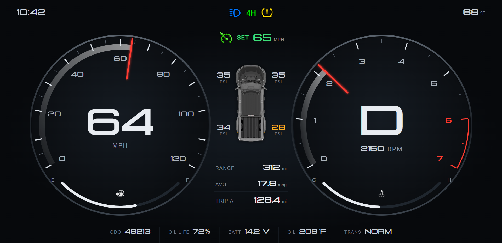
Speedometer left, tachometer right, gear inside the tach. Fuel and coolant arcs sit in the lower gap of each dial.
Center column: cruise, tire pressures on the truck plan view, range, average, trip.
Alarm grid: top center row. Cruise region: 300 × 80 at x 810, y 104.
Physical preview
Off: hidden 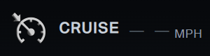
Available 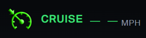
Active, no set speed 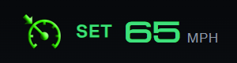
Set speed ACC + set speed LIM + limit speed
B · Horizon
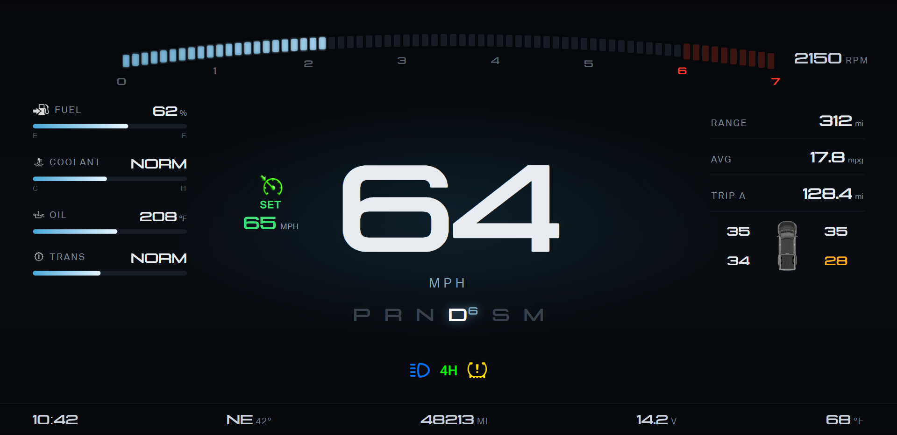
Large center digital speed. The tachometer is a light bar across the top. Gear selector row under the speed.
Left column: fuel, coolant, oil, and transmission bars. Right column: range, average, trip, tire pressures.
Alarm grid: center band above the dock. Cruise region: 220 × 150 at x 470, y 360, beside the speed.
Physical preview
Off: hidden 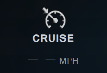
Available 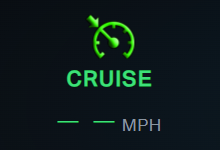
Active, no set speed 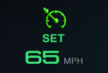
Set speed 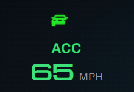
ACC + set speed 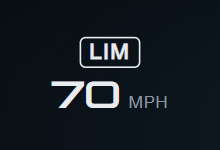
LIM + limit speed
Driving view pick: A or B
Off-road view
A · Instrument
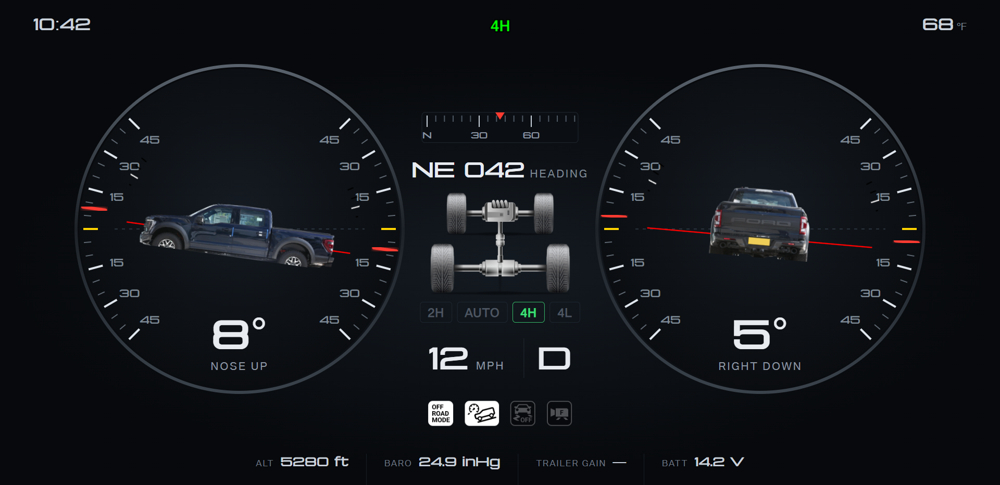
Separate pitch and roll instruments with the genuine Ford side and rear truck art. Red ring index marks the live angle.
Center: compass tape and heading, drivetrain diagram, 4WD mode chips, speed and gear, trail assist icons.
Same top bar, alarm grid, and cruise region as driving A.
Physical preview
B · Terrain
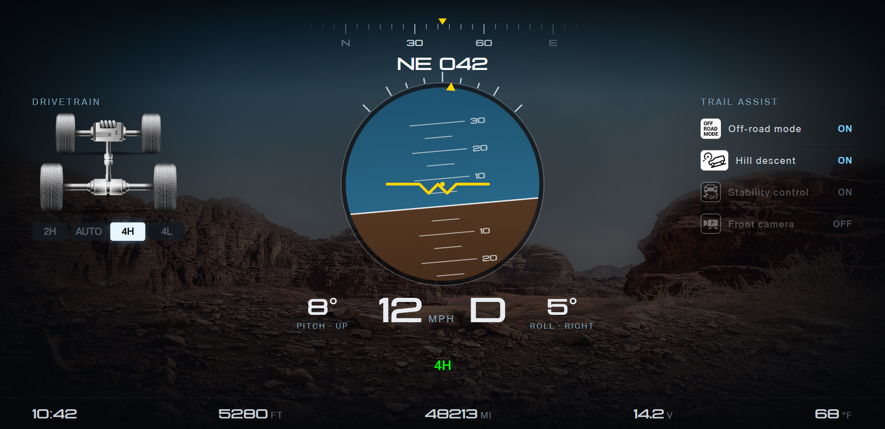
One artificial horizon combines pitch and roll over the genuine Ford terrain wallpaper.
Left: drivetrain and 4WD mode. Right: trail assist states with labels. Normal states stay dim.
Same dock, alarm grid, and cruise region as driving B.
Physical preview
Off-road view pick: A or B